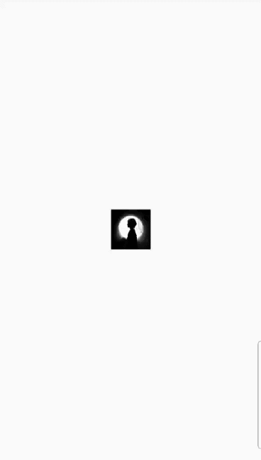

9.2 动画基本结构及状态监听
9.2.1 动画基本结构
在Flutter中我们可以通过多种方式来实现动画，下面通过一个图片逐渐放大示例的不同实现来演示Flutter中动画的不同实现方式的区别。
1. 基础版本
下面我们演示一下最基础的动画实现方式：
class ScaleAnimationRoute extends StatefulWidget {
const ScaleAnimationRoute({Key? key}) : super(key: key);
@override
_ScaleAnimationRouteState createState() => _ScaleAnimationRouteState();
}
//需要继承TickerProvider，如果有多个AnimationController，则应该使用TickerProviderStateMixin。
class _ScaleAnimationRouteState extends State<ScaleAnimationRoute>
with SingleTickerProviderStateMixin {
late Animation<double> animation;
late AnimationController controller;
@override
initState() {
super.initState();
controller = AnimationController(
duration: const Duration(seconds: 2),
vsync: this,
);
//匀速
//图片宽高从0变到300
animation = Tween(begin: 0.0, end: 300.0).animate(controller)
..addListener(() {
setState(() => {});
});
//启动动画(正向执行)
controller.forward();
}
@override
Widget build(BuildContext context) {
return Center(
child: Image.asset(
"imgs/avatar.png",
width: animation.value,
height: animation.value,
),
);
}
@override
dispose() {
//路由销毁时需要释放动画资源
controller.dispose();
super.dispose();
}
}
上面代码中addListener()函数调用了setState()，所以每次动画生成一个新的数字时，当前帧被标记为脏(dirty)，这会导致widget的build()方法再次被调用，而在build()中，改变Image的宽高，因为它的高度和宽度现在使用的是animation.value ，所以就会逐渐放大。值得注意的是动画完成时要释放控制器(调用dispose()方法)以防止内存泄漏。
上面的例子中并没有指定Curve，所以放大的过程是线性的（匀速），下面我们指定一个Curve，来实现一个类似于弹簧效果的动画过程，我们只需要将initState中的代码改为下面这样即可：
@override
initState() {
super.initState();
controller = AnimationController(
duration: const Duration(seconds: 3), vsync: this);
//使用弹性曲线
animation=CurvedAnimation(parent: controller, curve: Curves.bounceIn);
//图片宽高从0变到300
animation = Tween(begin: 0.0, end: 300.0).animate(animation)
..addListener(() {
setState(() => {});
});
//启动动画
controller.forward();
}
运行后效果如图9-1所示：

2. 使用AnimatedWidget简化
细心的读者可能已经发现上面示例中通过addListener()和setState() 来更新UI这一步其实是通用的，如果每个动画中都加这么一句是比较繁琐的。AnimatedWidget类封装了调用setState()的细节，并允许我们将 widget 分离出来，重构后的代码如下：
import 'package:flutter/material.dart';
class AnimatedImage extends AnimatedWidget {
const AnimatedImage({
Key? key,
required Animation<double> animation,
}) : super(key: key, listenable: animation);
@override
Widget build(BuildContext context) {
final animation = listenable as Animation<double>;
return Center(
child: Image.asset(
"imgs/avatar.png",
width: animation.value,
height: animation.value,
),
);
}
}
class ScaleAnimationRoute1 extends StatefulWidget {
const ScaleAnimationRoute1({Key? key}) : super(key: key);
@override
_ScaleAnimationRouteState createState() => _ScaleAnimationRouteState();
}
class _ScaleAnimationRouteState extends State<ScaleAnimationRoute1>
with SingleTickerProviderStateMixin {
late Animation<double> animation;
late AnimationController controller;
@override
initState() {
super.initState();
controller = AnimationController(
duration: const Duration(seconds: 2), vsync: this);
//图片宽高从0变到300
animation = Tween(begin: 0.0, end: 300.0).animate(controller);
//启动动画
controller.forward();
}
@override
Widget build(BuildContext context) {
return AnimatedImage(
animation: animation,
);
}
@override
dispose() {
//路由销毁时需要释放动画资源
controller.dispose();
super.dispose();
}
}
3. 用AnimatedBuilder重构
用AnimatedWidget 可以从动画中分离出 widget，而动画的渲染过程（即设置宽高）仍然在AnimatedWidget 中，假设如果我们再添加一个 widget 透明度变化的动画，那么我们需要再实现一个AnimatedWidget，这样不是很优雅，如果我们能把渲染过程也抽象出来，那就会好很多，而AnimatedBuilder正是将渲染逻辑分离出来, 上面的 build 方法中的代码可以改为：
@override
Widget build(BuildContext context) {
//return AnimatedImage(animation: animation,);
return AnimatedBuilder(
animation: animation,
child: Image.asset("imgs/avatar.png"),
builder: (BuildContext ctx, child) {
return Center(
child: SizedBox(
height: animation.value,
width: animation.value,
child: child,
),
);
},
);
}
上面的代码中有一个迷惑的问题是，child看起来像被指定了两次。但实际发生的事情是：将外部引用child传递给AnimatedBuilder后，AnimatedBuilder再将其传递给匿名构造器， 然后将该对象用作其子对象。最终的结果是AnimatedBuilder返回的对象插入到 widget 树中。
也许你会说这和我们刚开始的示例差不了多少，其实它会带来三个好处：
-
不用显式的去添加帧监听器，然后再调用
setState()了，这个好处和AnimatedWidget是一样的。 -
更好的性能：因为动画每一帧需要构建的 widget 的范围缩小了，如果没有
builder，setState()将会在父组件上下文中调用，这将会导致父组件的build方法重新调用；而有了builder之后，只会导致动画widget自身的build重新调用，避免不必要的rebuild。 -
通过
AnimatedBuilder可以封装常见的过渡效果来复用动画。下面我们通过封装一个GrowTransition来说明，它可以对子widget实现放大动画：class GrowTransition extends StatelessWidget { const GrowTransition({Key? key, required this.animation, this.child, }) : super(key: key); final Widget? child; final Animation<double> animation; @override Widget build(BuildContext context) { return Center( child: AnimatedBuilder( animation: animation, builder: (BuildContext context, child) { return SizedBox( height: animation.value, width: animation.value, child: child, ); }, child: child, ), ); } }这样，最初的示例就可以改为：
... Widget build(BuildContext context) { return GrowTransition( child: Image.asset("images/avatar.png"), animation: animation, ); }Flutter中正是通过这种方式封装了很多动画，如：FadeTransition、ScaleTransition、SizeTransition等，很多时候都可以复用这些预置的过渡类。
9.2.2 动画状态监听
上面说过，我们可以通过Animation的addStatusListener()方法来添加动画状态改变监听器。Flutter中，有四种动画状态，在AnimationStatus枚举类中定义，下面我们逐个说明：
| 枚举值 | 含义 |
|---|---|
dismissed | 动画在起始点停止 |
forward | 动画正在正向执行 |
reverse | 动画正在反向执行 |
completed | 动画在终点停止 |
示例
我们将上面图片放大的示例改为先放大再缩小再放大……这样的循环动画。要实现这种效果，我们只需要监听动画状态的改变即可，即：在动画正向执行结束时反转动画，在动画反向执行结束时再正向执行动画。代码如下：
initState() {
super.initState();
controller = AnimationController(
duration: const Duration(seconds: 1),
vsync: this,
);
//图片宽高从0变到300
animation = Tween(begin: 0.0, end: 300.0).animate(controller);
animation.addStatusListener((status) {
if (status == AnimationStatus.completed) {
//动画执行结束时反向执行动画
controller.reverse();
} else if (status == AnimationStatus.dismissed) {
//动画恢复到初始状态时执行动画（正向）
controller.forward();
}
});
//启动动画（正向）
controller.forward();
}